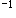

A.胰
B.脾
C.肝
D.结肠
E.十二指肠
F.肾
参考答案：A B D F
A.半坐卧位
B.鼓励患者多喝水
C.吸氧
D.保暖
E.抽血送检血常规、血型等
F.建立静脉通道
G.监测生命体征
参考答案：C D E F G
A.腹部CT
B.血淀粉酶测定
C.腹部B型超声
D.胸、腹部X线片
E.腹腔穿刺
F.立位腹部X线透视
参考答案：A B C D E
A.预防尾骶部压疮
B.使脓液积聚于盆腔
C.有利于呼吸和循环
D.有利于炎症局限及引流
E.防止膈下感染
F.促进胃肠道功能恢复
参考答案：B C D E
A.盆腔脓肿
B.肠间腔肿
C.肺部感染
D.结肠瘘
E.膈下脓肿
F.切口感染
参考答案：A D
A.上消化道钡餐造影
C.立位腹部X线透视
D.血常规
E.腹部B型超声
F.腹腔诊断性穿刺
G.纤维胃镜
参考答案：B C D E F
A.备皮、皮试
B.禁食水
C.胃肠减压
D.取半卧位
E.心理护理
F.使用抗生素
G.静脉输液
参考答案：A B C E F G
A.十二指肠
B.横结肠
C.回肠近端
D.空肠远端
E.空肠近端
F.回肠末端
参考答案：E
A.少食多餐
B.胃肠减压
C.禁食、输液
D.使用镇静剂
E.流质饮食
F.餐后平卧
G.避免过甜饮食
参考答案：A F G
题目解析：患者表现为早期倾倒综合征。护理：少食多餐，避免过甜、过咸、过浓的流质饮食；宜进低碳水化合物、高蛋白饮食；用餐时限制饮水喝汤；进餐后平卧20min。
A.血管造影
B.髋关节X线片
C.ECT
D.B型超声
E.髋关节MRI
F.髋关节CT
参考答案：B
A.人工股骨头置换
B.全髋关节置换
C.保持患肢于外展、旋转中立位
D.“丁”字鞋外固定
E.短期皮肤牵引
F.闭合复位空心螺钉内固定术
参考答案：A B F
A.下肢深静脉血栓
B.功能障碍
C.脱位
D.肿胀
E.出血
F.感染
参考答案：A C F
A.腰椎X线片（正、侧位）
B.胸椎X线片（正、侧位）
C.腰椎CT
D.腰椎MRI
E.胸椎MRI
F.胸椎CT
G.双足X线片
参考答案：A B C D E F G
A.压疮
B.脊髓损伤
C.下肢静脉栓塞
D.马尾神经损伤
E.尿路感染
F.坠积性肺炎
参考答案：A B C D E F
题目解析：脊髓损伤是脊柱骨折的严重并发症，由于椎体的移位或碎骨片突出于椎管内，使脊髓或马尾神经产生不同程度的损伤，多发生于颈椎下段和胸腰段，BD对。一般腰椎胸椎骨折最好卧床休息三个月，易发生压疮、下肢静脉栓塞，对于卧床的病人来说也比较容易发生呼吸道和泌尿道的感染，ACEF对。
A.预防和治疗并发症
B.功能重建与康复
C.尽早治疗
D.减轻脊髓水肿
E.手术减压
F.复位内固定术
A.膀胱或后尿道损伤
B.腹膜后血肿
C.失血休克
D.腰骶神经丛或坐骨神经损伤
E.直肠损伤
F.腹腔内脏损伤
A.直肠损伤
B.腹腔内脏损伤
C.失血性休克
D.膀胱或后尿道损伤
E.腹膜后血肿
F.腰骶神经丛或坐骨神经损伤
参考答案：B C E
A.监测生命体征
B.尽量减少搬动
C.止血、镇痛
D.面罩吸氧
E.记录24 h尿量
F.建立2条静脉通路
A.脱位
B.深静脉血栓形成
C.感染
D.关节积液
E.关节粘连
F.腓总神经损伤
参考答案：B C F
A.屈膝锻炼
B.踝关节跖屈运动
C.踝关节背伸运动
D.股四头肌等长收缩训练
E.CPM机锻炼
F.步行练习
G.腘绳肌等长收缩训练
参考答案：A B C D E G
A.负托重物
B.在半蹲姿势做“膝部旋转”
C.蹲跪
D.剧烈运动
E.过度扭曲膝关节
F.下蹲站立
A.创伤性骨性关节炎
B.类风湿关节炎和强直性脊柱炎晚期膝关节病变
C.退行性膝关节骨性关节炎
D.涉及膝关节面的肿瘤切除后需行膝关节重建
E.静止期的感染性膝关节炎
F.大面积的膝关节骨软骨坏死
A.ECT
B.心、肺功能检查
C.下肢血管超声
D.治疗体内的慢性感染和基础疾病
E.停用阿司匹林等非甾体消炎药
F.膝关节X线片
A.深静脉血栓形成
B.胫后动脉损伤
C.敷料包扎过紧
D.假体松动
E.感染
F.腓总神经麻痹
参考答案：F
A.妊娠合并贫血
B.妊娠期低蛋白血症
C.妊娠高血压综合征
D.妊娠合并糖尿病
E.妊娠合并肝炎
F.妊娠合并心脏病
参考答案：A B C
A.血常规
B.尿常规
C.24 h蛋白尿测定
D.子宫及附件B型超声
E.肝、肾功能
F.人绒毛膜促性腺激素测定
参考答案：A B C E
A.内分泌功能失调
B.肾小管重吸收功能降低
C.弥漫性血管内凝血
D.水、钠潴留
E.全身小动脉痉挛
F.胎盘绒毛退行性变化
A.严格限制盐和液体入量
B.给予氧气吸入
C.休息时取左侧卧位较好
D.采取高蛋白质、低热量饮食
E.每日应测量体重和血压
F.每日休息不少于10 h
参考答案：C E F
A.安排在单人暗室
B.观察病情并记录
C.加床挡防止受伤
D.严格记录出入量
E.立即通知医师
F.保持呼吸道通畅
G.保持病房环境安静
A.自觉症状消失或减轻
B.呼吸18次/min
C.膝反射消失
D.血压130/90 mmHg
E.尿量30 ml/h
F.尿量300 ml/24 h
参考答案：C F
题目解析：使用硫酸镁必备条件：①膝腱反射存在；②呼吸≥16次/分；③尿量≥17ml/h或400ml/24h；④备有10%葡萄糖酸钙。
A.待自然临产，宫口开全后阴道助产
B.嘱孕妇在家要注意休息，休息时应左侧卧位
C.待胎儿成熟后滴注缩宫素引产
D.待胎儿成熟后择期剖宫产
E.若无产科指征等待自然分娩
F.待临产后急诊剖宫产
参考答案：B D
A.分娩期
B.产褥期最初3 d
C.妊娠32～34周
D.妊娠14～20周
E.妊娠24～28周
F.妊娠8～12周
A.肺底部出现少量持续性湿性啰音，咳嗽后不消失
B.轻微活动后即有胸闷、心悸、气促
C.双下肢水肿
D.休息时心率＞110次/min
E.轻微活动后呼吸＞20次/min
F.休息时常需呼吸新鲜空气
G.夜间常因胸闷而须坐起
参考答案：A B D G
题目解析：识别早期心力衰竭的征象：①轻微活动后即有胸闷、心悸、气短；②休息时心率每分钟超过110次，呼吸每分钟大于20次；③夜间常因胸闷而需坐起呼吸，或需到窗口呼吸新鲜空气；④肺底部出现少量持续性湿啰音，咳嗽后不消失。
A.心脏病类型
B.既往有无结核病史
C.心脏病程度
D.是否有水肿
E.心功能分级
F.生活环境
参考答案：A C E
A.临产后遵医嘱给抗生素至产后1周
B.第二产程可手术助产
C.每30 min监测1次胎心变化
D.胎儿娩出后遵医嘱给产妇皮下注射吗啡
E.宫缩乏力可用麦角新碱
F.胎儿娩出后腹部压5 kg砂袋
参考答案：A B D
A.腹部放置砂袋6～8 h
B.预防性使用抗生素
C.适当延长住院时间
D.积极推行母婴同室
E.产后出血须输血时，注意输血速度
F.保证产后72 h内充足休息
G.心功能Ⅰ～Ⅲ级的产妇可母乳喂养
参考答案：B C E F
A.阴道裂伤
B.凝血功能障碍
C.胎盘部分剥离
D.宫颈裂伤
E.缩宫素使用不当
F.产后宫缩乏力
A.按摩子宫
B.若膀胱过度充盈，迅速给予导尿
C.加强宫缩
D.应用宫缩药
E.使用升压药物
F.行刮宫术
参考答案：A B C D
A.胎儿娩出24 h后产褥期内发生的子宫大量出血
B.多数发生在产后6～8周
C.子宫复旧不全也是晚期产后出血发生的原因之一
D.分娩2 h后发生的子宫大出血
E.多数晚期产后出血发生在产后10 d左右
F.胎盘胎膜残留是一个重要原因
参考答案：A C E F
A.子宫肌瘤
B.流产
C.无排卵性功能失调性子宫出血
D.子宫内膜炎
E.子宫内膜癌
F.子宫内膜息肉
参考答案：B C
A.子宫B型超声
B.性激素测定
C.刮取子宫内膜组织检查
D.阴道脱落细胞涂片检查
E.基础体温测量
F.宫颈黏液结晶检查
参考答案：A C
A.大脑皮质
B.腺垂体
C.卵巢
D.外源激素
E.丘脑下部
F.输卵管
A.哮喘性支气管炎
B.低血糖休克
C.过敏性休克
D.预防接种后全身反应
E.虚脱
F.呼吸衰竭
G.预防接种后局部反应
H.晕针
参考答案：C
A.皮下或静脉注射肾上腺素
B.立即送医院
D.输注高渗葡萄糖液
E.平卧
F.湿毛巾冷敷
G.就地抢救
H.糖皮质激素
I.注意保暖
J.病情稳定转至医院，机械通气
参考答案：A C D E G H I
题目解析：考虑患儿发生了过敏性休克。立即停药，协助患者平卧，报告医生，就地抢救，B错EG对。注意保暖，F错I对。呼吸受抑制时，有条件者可插入气管导管，借助人工呼吸机辅助或控制呼吸，J错。盐酸肾上腺素是抢救过敏性休克的首选药物，A对。给予氧气吸入，改善缺氧症状，C对。静脉滴注10%葡萄糖溶液或平衡溶液扩充血容量，D对。糖皮质激素具有抗炎、抗中毒、抗休克和抗过敏等作用，H对。
A.百白破三联疫苗
B.甲型肝炎疫苗
C.腮腺炎疫苗
D.流行性乙型脑炎疫苗
E.流行性脑脊髓膜炎疫苗
F.麻疹减毒活疫苗
G.卡介苗
H.流行性感冒疫苗
I.乙型肝炎疫苗
J.水痘疫苗
K.脊髓灰质炎减毒活疫苗
参考答案：A G I K
A.新生儿颅内出血
B.新生儿溶血症
C.新生儿肺炎
D.新生儿败血症
E.新生儿破伤风
F.新生儿寒冷损伤综合征
A.母婴血型
B.细菌培养
C.血生化
D.尿常规
E.肝、胆B型超声
F.血常规
参考答案：A
A.静脉用免疫球蛋白
B.换血疗法
C.输入清蛋白
D.纠正代谢性酸中毒
E.蓝光照射
F.给予肝酶诱导剂
A.肺炎
B.败血症
C.呼吸衰竭
D.脑炎
E.胆红素脑病
F.心力衰竭
A.做好换血准备
B.密切观察病情
C.向家长介绍该病基本知识
D.蓝光照射中禁饮水
E.加强保暖
F.提早喂养，刺激肠蠕动
参考答案：A B C E F
A.新生儿败血症
C.新生儿生理性黄疸
D.新生儿肝炎
E.新生儿颅内出血
A.31 ℃
B.32 ℃
C.34 ℃
D.33 ℃
E.30 ℃
F.35 ℃
参考答案：D
A.10 ml，3 h
B.3 ml，2 h
C.5 ml，3 h
D.4 ml，2 h
E.2 ml，1 h
F.2 ml，2 h
A.合理喂养
B.维持有效呼吸
C.避免噪声刺激
D.呼吸暂停可持续给氧
E.注意保暖
F.谢绝母亲参与护理
A.血清总蛋白、清蛋白
B.血常规
C.电解质（血钠、血氯、血钾、血钙、血磷）
D.胆固醇
E.胰岛素样生长因子
F.红细胞沉降率
G.血糖
H.C反应蛋白
I.胸部、腹部X线片
J.粪常规
参考答案：A B C D E G J
题目解析：患儿有腹泻呕吐，应检查血常规、尿常规、血清蛋白；该患儿出现枕秃，颅骨软化，考虑可能有维生素D的缺乏，应该监测电解质；频繁呕吐且食欲差，应该监测血糖，胰岛素的情况；同时对于此类腹泻的，也需要观察胆固醇的值。
A.营养性贫血
B.佝偻病
C.腹泻伴轻度脱水
D.病毒性心肌炎
E.蛋白质－能量营养不良（中度）
F.上呼吸道感染
G.低出生体重儿
题目解析：平时食欲差、易激惹、可见枕秃、颅骨软化（＋）等表现是佝偻病的表现；呕吐、腹泻，前囟微凹，皮肤弹性差是腹泻伴轻度脱水的表现；体重4.2 kg，面色苍白，肌肉明显松弛，腹部皮下脂肪厚约0.2 cm是蛋白质-能量营养不良的表现。
A.白细胞数量
B.轻度贫血
C.人工喂养儿，未按时添加辅食
D.体重低于正常36%
E.血清清蛋白下降
F.腹壁皮下脂肪减少
G.食欲减退，毛发干枯，肌肉松弛
H.枕秃、颅骨软化
参考答案：B C D E F G H
A.给予高蛋白、高热量、高脂肪饮食
B.输清蛋白
C.尽早给予足量的热量
D.治疗并发症
E.助消化药
F.加强护理
G.预防感染
H.口服维生素D
I.改善喂养，调整饮食
参考答案：D E F G H I
题目解析：此患儿为5个月，出现腹泻、低热、呕吐，考虑出现了生理性腹泻，此时需要调整患儿的饮食，促进消化。腹部皮下脂肪厚约0.2 cm说明已经出现了营养不良，但患儿有腹泻，故此时不适合给予高脂肪高热量的饮食，以免加重腹泻，此时无需输注白蛋白，ABC错误。患儿出现了枕秃，躁动，说明是有缺乏维生素D的，故需口服补充维D，ＤＥＦＧＨＩ正确。
A.呼吸衰竭
B.低血糖症
C.虚脱
D.低钙血症
E.心力衰竭
F.休克
G.昏厥
A.尿常规
B.粪常规
C.红细胞沉降率
D.C反应蛋白
E.胸部、腹部X线片
F.免疫球蛋白
G.血钙、血磷、碱性磷酸酶
H.电解质（血钠、血氯、血钾）、二氧化碳结合力
I.血常规
参考答案：B H I
题目解析：患儿频繁呕吐伴腹泻，为蛋花汤样粪，T 37.8 ℃；精神烦躁，方颅，前囟、眼窝凹陷，皮肤弹性差，四肢稍凉。可诊断患儿患有小儿腹泻病伴中度等渗性脱水。因此需检查血、粪常规及电解质辅助检查确诊。
A.佝偻病
B.生理性腹泻
C.小儿腹泻病伴中度等渗性脱水
D.急性胃肠炎
E.尿布皮炎
F.细菌性痢疾
G.急性上呼吸道感染
参考答案：C D
题目解析：该患儿腹泻次数达10余次每天、大便蛋花汤样，属于重型腹泻，但患儿血钠值135，处于正常范围，皮肤、精神、尿量等却处于缺水状态，由于消化液的急性丧失并发了等渗性脱水。同时该患儿体温高，大便镜检出现脂肪球，怀疑急性胃肠炎。
A.肠黏膜保护剂
B.抗生素
C.助消化药
D.接种轮状病毒疫苗
E.口服止泻剂
F.口服补液（ORS）
G.加强臀部护理
H.静脉补液
I.暂禁食8 h
参考答案：A C G H
A.0.9%氯化钠溶液
B.5%碳酸氢钠溶液
C.2∶1液（等张含钠液）
D.1∶1液（1/2张含钠液）
E.1∶2液（1/3张含钠液）
F.11.2%乳酸钠溶液
G.1∶4液（1/5张含钠液）
H.2∶3∶1混合液（1/2张含钠液）
I.4∶3∶2混合液（2/3张含钠液）
J.10%葡萄糖液
参考答案：D H
A.病毒性心肌炎
B.便秘
C.低钙血症
D.中毒性肠麻痹
E.低钾血症
F.中毒性脑病
A.第2天主要补充继续丢失量和生理需要量
B.静脉补钾浓度＜0.3%，严重低钾时可静脉注射
C.腹泻后用温水清洗臀部，涂抗生素软膏
D.记录24 h出入量，观察并发症
E.脱水纠正后，可改口服补液（ORS）
F.观察脱水纠正情况
G.腹胀者肛管排气
H.腹泻仍未纠正，更换抗生素
I.监测血钠、血钾、血钙浓度
J.补液后出现肺水肿，给予毛花苷C和甘露醇
参考答案：A D F G I
题目解析：有低钾血症者遵循“见尿补钾”的原则，可口服或静脉补充，但静脉补充浓度不超过0.3%，且不可推注，B错。 每次便后用温水清洗臀部并擦干，以保持皮肤清洁、干燥；局部皮肤发红处涂以5%鞣酸软膏或40%氧化锌油并按摩片刻，促进局部血液循环，C错。 口服补液盐适用于无严重呕吐者，E错。 合理使用抗生素，水样便一般不用抗生素，粘液便、脓血便可选用抗生素，H错。 急性肺水肿，或严重肺瘀血禁用甘露醇，J错。
A.急性上呼吸道感染
B.肺结核
C.哮喘性支气管炎
D.毛细支气管炎
E.支气管肺炎
F.支原体肺炎
A.给予清淡的流质饮食
B.哺喂过程中可暂停给予休息
C.进食后患儿侧卧位并抬高肩部
D.少量多餐，避免过饱
E.摄入足够水分
F.必要时边吸氧边哺喂
A.中毒性肠麻痹
B.中毒性脑病
C.DIC
D.肺水肿
F.脓胸或脓气胸
A.15 ml·kg·h
B.30 ml·kg·h
C.5 ml·kg·h
D.20 ml·kg·h
E.10 ml·kg·h
F.25 ml·kg·h
A.临床症状消失
B.体温恢复正常后5～7 d
C.体温恢复正常
D.临床症状消失后5 d
E.临床症状消失后7 d
F.体温恢复正常后3 d
A.病原学检查
B.动脉血气分析
C.血清学检查
D.血生化
E.胸部X线片
题目解析：患儿耳后、颈部沿发际边缘见红色斑丘疹，怀疑所患病为麻疹。麻疹的特异性诊断采用病原学检查方法，从呼吸道分泌物中分离出麻疹病毒，或检测到麻疹病毒。故选A。
A.吸氧
B.监测体温
C.隔离患儿
D.乙醇溶液擦浴
E.医护人员接触患儿前后应洗手，更换隔离衣或在空气流动处停留30 min
F.小剂量退热剂
A.每天用紫外线消毒患儿房间或通风30 min，患儿衣物在阳光下曝晒
B.保持皮肤清洁，勤剪指甲
C.隔离患儿至出疹后5 d
D.用0.9%氯化钠溶液清洗双眼，再滴入抗生素眼药水或眼膏，并加服鱼肝油预防干眼症
E.清淡饮食
F.口腔护理：0.9%氯化钠溶液或2%硼酸溶液洗漱
微信关注